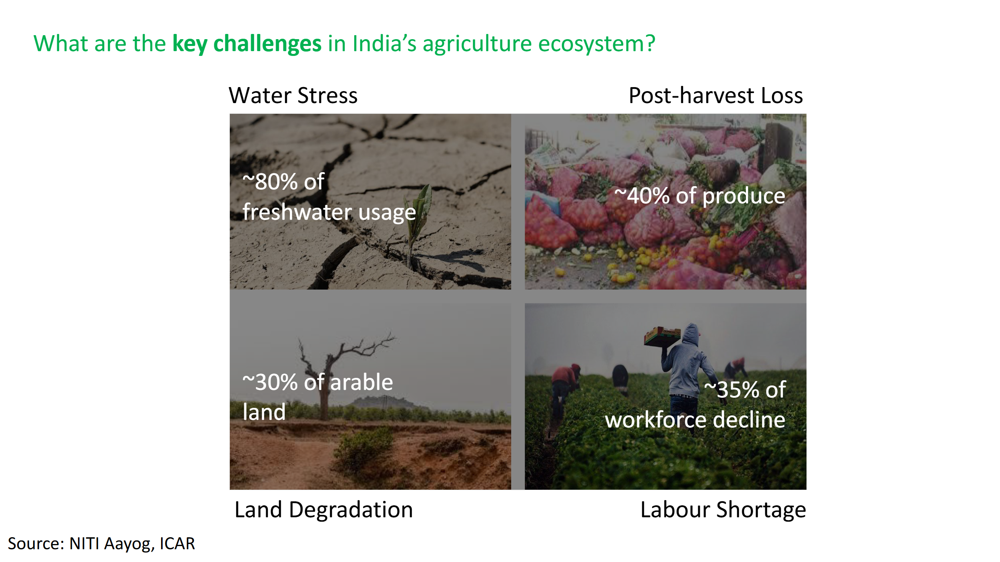
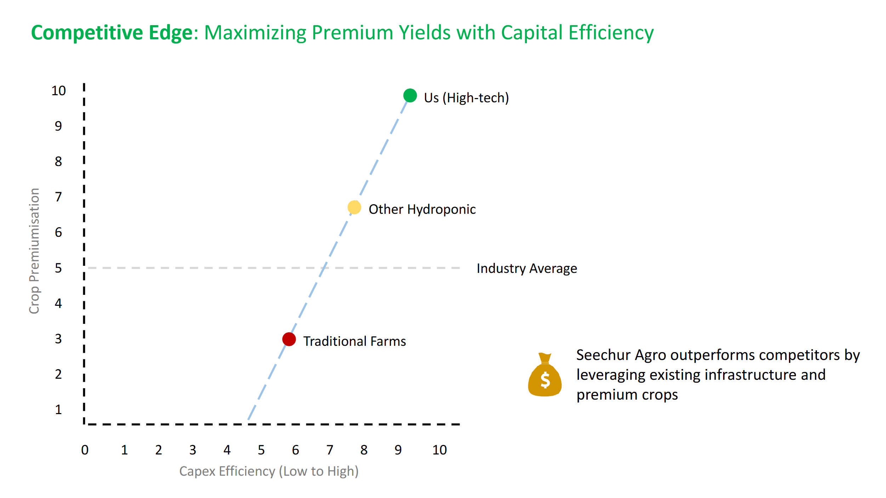

Why Lakadong Turmeric?
What is Lakadong?
Lakadong turmeric from Meghalaya’s Jaintia Hills is renowned for consistently high curcumin levels — often cited in the ~7–12% range, far above common varieties (~2–3%).
| Parameter | Typical Lakadong Value | Notes |
|---|---|---|
| Curcumin (%) | ~7.4% avg (range 7–12%) | Indicative values from state/mission briefs and lab reports. |
| Volatile oil (%) | 3.6–4.8% (dry rhizome) | Common technical range reported for Lakadong. |
| Moisture (cured) | ≈5.8% | Dependent on curing and drying protocol. |
| Positioning | Premium colour, flavour & nutraceutical interest | Supports export and value-added applications. |
Mission Lakadong (Meghalaya)
Meghalaya’s Mission Lakadong works to scale production, productivity and value addition via FPOs, testing and processing infrastructure, and origin branding. Public targets discussed include increasing planted area, boosting production, and improving productivity, alongside a recently granted GI tag that strengthens authenticity.
Why it fits our model
- Premium pricing: High curcumin supports superior realisations versus common turmeric.
- Traceability & quality: Controlled nursery + lot testing for curcumin/residues improves export readiness.
- Value-addition runway: Powder, sterilised lots, oleoresin and curcumin extracts open nutraceutical channels.
Adaptability to protected cultivation
While Lakadong is traditionally open-field grown, our plan adapts nursery establishment and early growth under protected / controlled environments to enhance sanitation, uniformity and traceability. Field growing and curing then follow best-practice protocols to meet quality specs for premium buyers.
Key context from Indian agriculture

